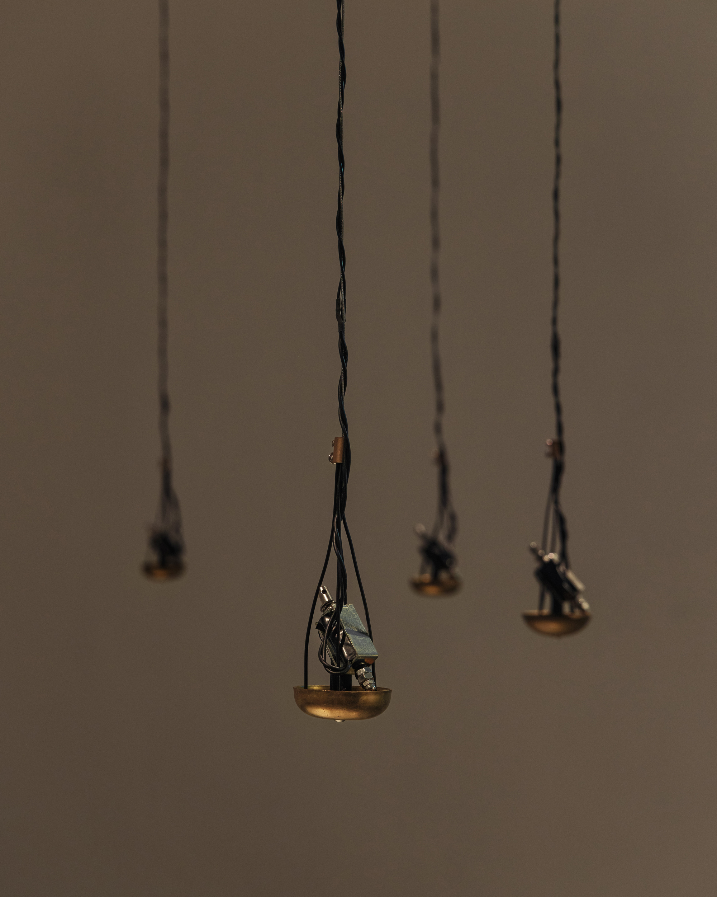
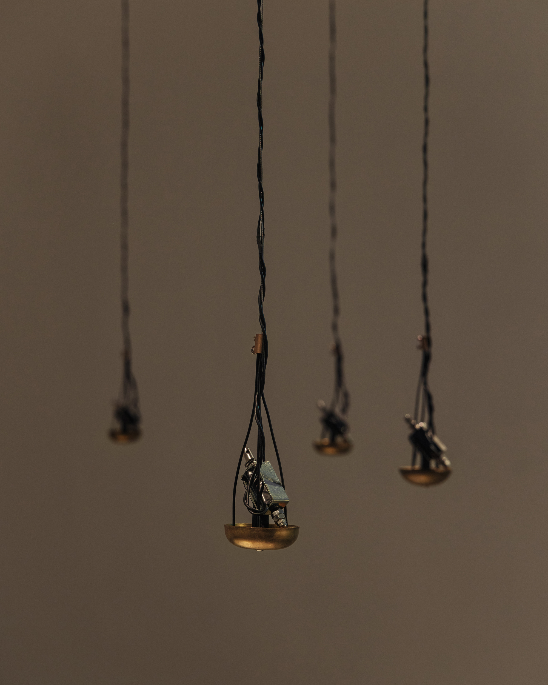
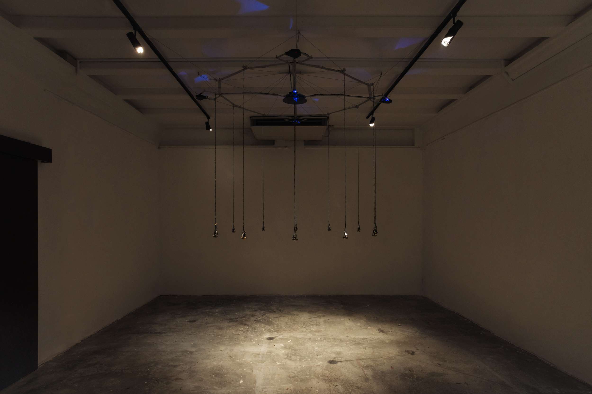

Times, 2023
Mechanical metronome brass bells, solenoid actuators, microcontrollers, time-of-flight sensors, acoustic waves
The work emits a loop of low pitches once activated as well as high pitches that emerge when the actuator network triggers in relation to the sensor-detected presence of visitors in proximity to a bell.
Space Objectifs - Centre for Photography & Film, Lower Gallery. Singapore
Exhibtion Coordination DASSAD Collective
Engineering Justin Ong
Photography Zehern&Zeherng
Videography Zehern&Zeherng

 

